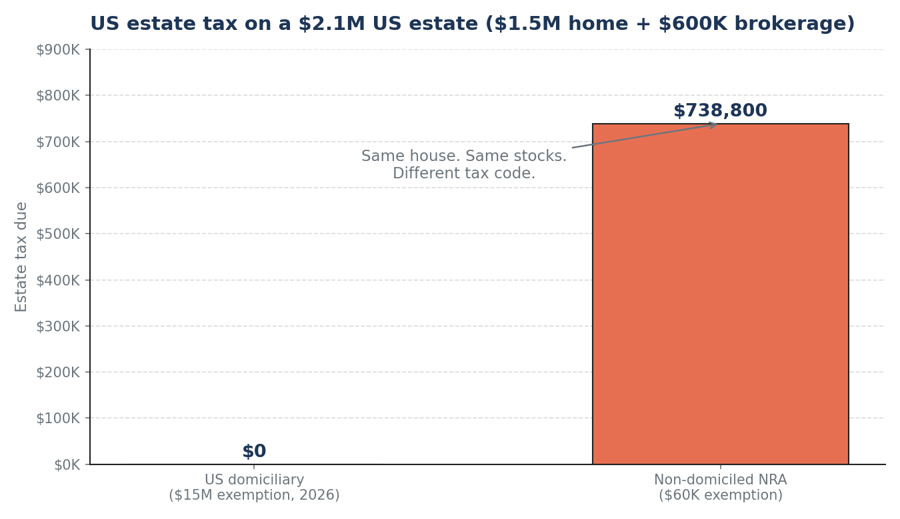
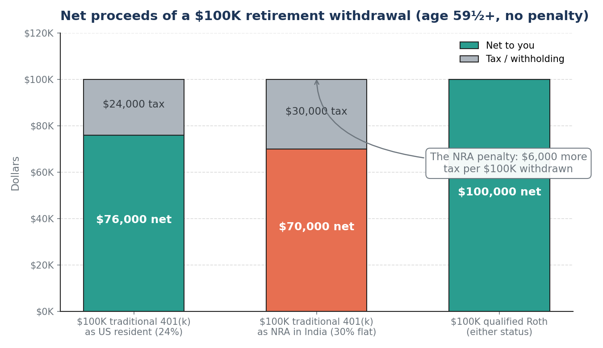
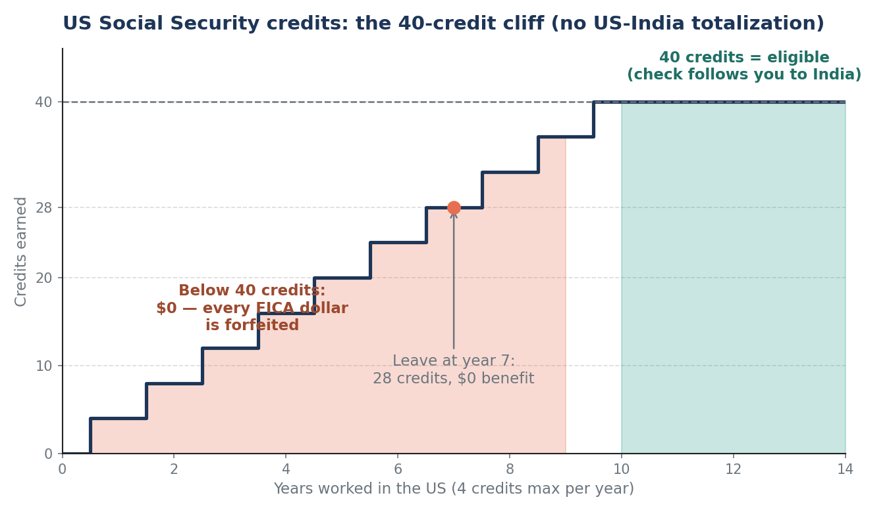

On October 8, 2026, the Department of Labor suspended eight major employers — Microsoft, Adobe, Cognizant, Infosys, TCS, Wipro, HCL, and Capgemini — from the PERM green-card process, freezing new and pending applications with no published end date. On the table alongside it: proposals to kill the 60-day grace period and a $103,265 H-1B filing fee. Your H-1B itself isn't suspended, and approved I-140s still stand. But the message is loud enough that the question deserves a serious answer: if your visa path ever ends and you have to leave, what actually happens to your money?
Not the scary rumor version. The real version — with the numbers.
Myth first: there is no H-1B "exit tax"
The U.S. does have an exit tax — Section 877A, a mark-to-market levy on built-in gains. But it applies only to people who renounce citizenship or to long-term green-card holders (8+ years holding the card) who give up that status. An H-1B holder leaving after ten years owes zero exit tax. Don't let anyone sell you planning for a tax that doesn't exist.
What you do face is a set of smaller, sharper traps. Here they are, ordered by dollar damage.
Trap 1: The estate-tax domicile cliff — a $739,000 surprise
This is the biggest one, and almost nobody on an H-1B knows about it.
For income tax, you're a U.S. resident alien once you pass the substantial-presence test. For estate tax, "resident" means something different: domicile — the country you intend to remain in permanently. An H-1B is a temporary nonimmigrant visa. Most H-1B holders are non-domiciled for estate-tax purposes, even while filing as U.S. residents for income tax.
The gap is staggering. For 2026, a U.S. citizen or domiciliary gets a $15 million estate-tax exemption (made permanent by the One Big Beautiful Bill, P.L. 119-21). A non-domiciled nonresident alien gets $60,000 — a figure that hasn't been inflation-adjusted in decades. And India has no estate-tax treaty with the U.S. to soften it. The tax rate on everything above $60K of U.S.-situs property runs up to 40%.
US-situs property includes your U.S. home, U.S. stocks and ETFs (even inside your brokerage), and U.S. tangible property. Excluded: U.S. bank deposits, portfolio debt obligations, and life-insurance proceeds on your own life.
Run the numbers on a perfectly ordinary Bay Area H-1B estate — a $1.5M home plus a $600K U.S. brokerage account:

Same house, same stocks: $0 vs. $738,800 — computed on the unified rate schedule against the $2.04M above the $60K exemption, less the $13,000 unified credit. Your heirs file Form 706-NA, and your broker can't even release the stocks until the IRS issues a transfer certificate.
The levers that actually work here: lifetime gifting (the 2026 annual exclusion is $19,000 per donee, and gifts to a non-citizen spouse get a $194,000 annual exclusion), beneficiary designations kept current (they don't dodge the estate tax, but they dodge probate delays for your family), and term life insurance (proceeds are excluded U.S.-situs-wise and give your family liquidity while the estate sorts itself out). A revocable living trust does not reduce this tax — that's an income-and-probate tool, not an estate-tax shield for NRAs.
Trap 2: Cashing out retirement from abroad costs you more
Your 401(k) and IRA don't evaporate when you leave. They stay right where they are, with a U.S. custodian, subject to U.S. tax rules. But the rules get worse the moment you become a nonresident alien:
- Mandatory 30% federal withholding (IRC §1441) on every distribution — and unlike a U.S. resident, you cannot elect zero withholding. The custodian takes it off the top.
- No standard deduction, no graduated brackets on the 1040-NR for FDAP income. A $100K traditional 401(k) withdrawal that cost a resident $24K at a 24% marginal rate costs the NRA a flat $30K — $6,000 more per $100K, every time.

Two pieces of relief exist, and both need paperwork before the distribution:
- The India treaty (Article 20). Private pensions paid to an Indian resident are taxable only in India — many practitioners use this for periodic 401(k)/IRA payments via a W-8BEN. Lump sums are murkier; the treaty text says "pensions and other similar remuneration," and the IRS hasn't blessed lump-sum treatment cleanly. This is treaty-position territory — get a cross-border CPA, don't DIY it.
- India's side. As an Indian tax resident you're taxed on worldwide income, so the withdrawal hits your Indian slab too — but you claim a foreign tax credit for U.S. tax paid, so you don't pay twice. And Section 89A of India's Income-tax Act lets you defer Indian tax on the account until actual withdrawal (file Form 10-EE with your return) instead of being taxed as it accrues.
And the Roth is your hero here: qualified Roth distributions are tax-free regardless of residency status. Contributions always come out tax-free; qualified earnings too. A dollar in Roth is the most exit-proof dollar you own. (Non-qualified Roth earnings get the 30% withholding plus the 10% early-withdrawal penalty under 59½ — the five-year rule still follows you abroad.)
Trap 3: The Social Security cliff — 40 credits or nothing
There is no U.S.–India Social Security totalization agreement, and there wasn't one in 2026 either. That means:
- You pay the full 6.2% FICA employee share from day one with no relief.
- Your Indian work years cannot be combined with U.S. work to qualify.
- You need 40 credits (about 10 years) to earn any retirement benefit at all.

Leave at year seven and all ~$40K+ of employee FICA you paid is simply gone — no refund, no partial credit. This is the one exit-money input you can still control: if you're anywhere near 10 years, the math of staying a little longer is worth doing explicitly. At a $200K salary, each extra year costs you $12,400 in employee FICA but buys 4 credits toward a lifetime benefit.
Two pieces of genuinely good news if you do clear 40: the Social Security Fairness Act (signed January 2025) repealed the Windfall Elimination Provision, so an Indian EPF pension no longer shrinks your U.S. check — retroactive to benefits payable from January 2024. And India is on SSA's Country List 4, so your benefit can be paid while you live in India once earned — though India isn't on SSA's international direct-deposit list, so the check lands in a U.S. bank account you keep open. Under the treaty, the benefit is taxable only in the U.S.
Trap 4: The departure year itself
The year you leave is a dual-status year — part resident, part nonresident — and it has its own paperwork:
- Form 1040-C, the "sailing permit." Departing aliens are technically supposed to get IRS clearance before leaving. In practice many filers handle it via their final return, but ignoring departure-year compliance entirely is the classic way to turn a clean exit into a multi-year correspondence audit.
- Do your big money moves while you're still a resident. Roth conversions, portfolio rebalancing, realizing gains — every one of these is cheaper and simpler in your final full resident year than as an NRA. Once you're out, the 30% flat regime, lost deductions, and custodian headaches all apply.
- California may not let go. If you leave the U.S. from California, the Franchise Tax Board is famous for residency audits — keep evidence of the move (lease termination, one-way travel, new-country registration). This one line could save you a five-figure fight.
- Tell your custodian before it finds out. Many U.S. brokerages restrict or freeze accounts once the holder becomes an NRA — some force-liquidate. Schwab, Fidelity, and Interactive Brokers have different NRA policies; check yours before you leave, while you still have leverage and a U.S. address.
What not to do
- Don't cash out the 401(k) "to simplify" the week you leave. You'd pay 30% U.S. withholding plus Indian slab tax (with FTC), and if you're under 59½, the 10% penalty too. Leave it invested; withdraw strategically later.
- Don't assume the 30% withholding is the final answer. File the 1040-NR. Periodic payments can use graduated withholding (Form W-4P), and treaty positions can reduce the bill — withholding is a down payment, not a verdict.
- Don't assume your U.S. will or trust covers everything. A U.S. revocable trust doesn't shield NRAs from estate tax, and Indian-situs assets need Indian-law documents. Cross-border estate planning is a two-country job.
- Don't let the brokerage discover your NRA status. Proactive custodian conversations beat a frozen account and a forced liquidation at the worst time.
The pre-exit checklist (do these while still a resident)
- Roth conversions in your final low-income year — the cheapest exit-proofing there is.
- Consolidate old 401(k)s into one IRA while rollovers are frictionless.
- Beneficiaries current on every account — 401(k), IRA, brokerage, life insurance.
- Download cost-basis records for every taxable account; reconstructing them from abroad is miserable.
- Keep a U.S. bank account and mailing address — SSA payments, custodian correspondence, and tax refunds all need one.
- W-8BEN ready for every custodian, filed before any post-departure distribution.
- Term life insurance in force — excluded from U.S.-situs estate tax and gives your family cash while the estate untangles.
- A cross-border CPA and an immigration attorney on speed dial — this post is a map, not advice.
Takeaways
- No exit tax for H-1B departures — but three real traps: the $60K estate-tax exemption (vs. $15M), 30% flat withholding on retirement withdrawals, and the 40-credit Social Security cliff.
- A $2.1M U.S. estate faces ~$739K in estate tax as a non-domiciled NRA vs. $0 as a domiciliary.
- Qualified Roth dollars are the most exit-proof money you own — tax-free in either status.
- The October 2026 PERM freeze doesn't change your accounts today. But it makes this the right week to know exactly where your money would go if the visa ever did.
This post is for education only — not tax, legal, or investment advice. Immigration questions need an immigration attorney; cross-border tax questions need a cross-border CPA.